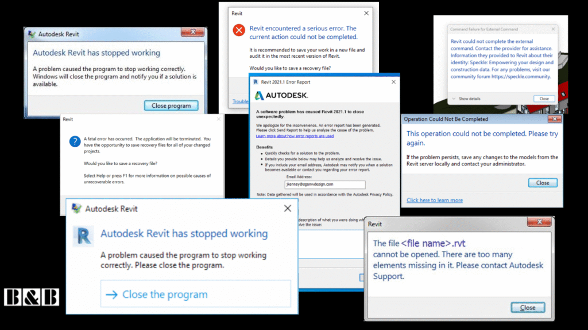
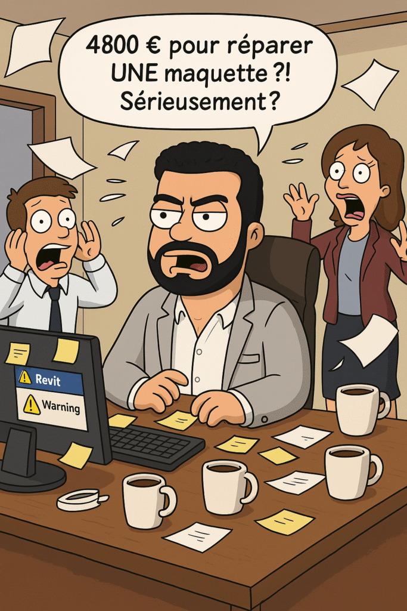
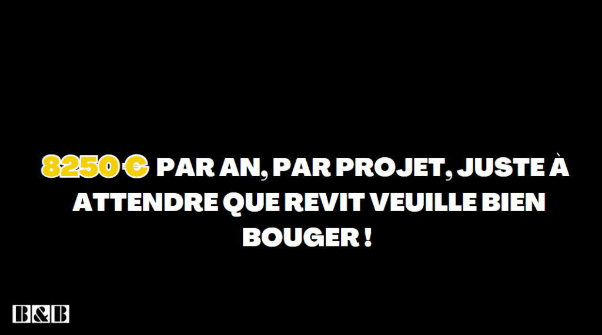
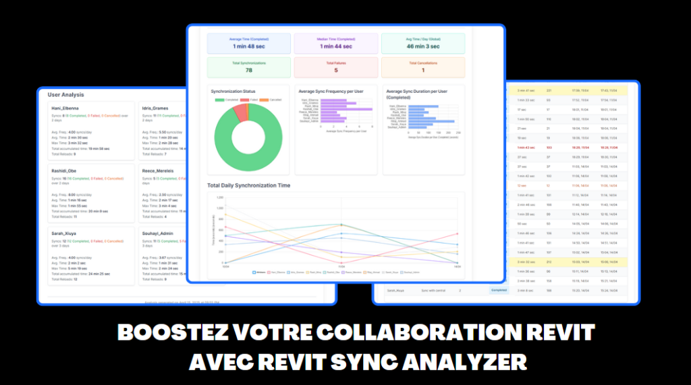

BIM Managers : Vos Modèles Revit “Malades” Vous Coûtent une Fortune (La Preuve par 2 Cas Chocs)
💣 BIM Managers, réveillez-vous ! Chaque jour, sous vos yeux, des milliers d’euros s’échappent de vos agences. Le coupable ? Souvent invisible, toujours insidieux : la santé négligée de vos modèles Revit. Vous vous concentrez sur les livrables, les échéances, la coordination… et c’est normal. Mais pendant ce temps, des modèles “malades” rongent discrètement votre rentabilité et le moral de vos équipes.

On parle d’efficacité BIM, d’optimisation, de collaboration fluidifiée. Pourtant, sur le terrain, combien de fois entend-on : “Le modèle est lourd, mais ça passe”, “Oui, il y a plein d’avertissements, mais on arrive à travailler”, “On nettoiera plus tard…” ? Cette attitude, c’est la porte ouverte à un gaspillage financier et temporel colossal. Cet article va vous le prouver, chiffres à l’appui, à travers deux cas concrets qui devraient vous faire sursauter.

Le Mythe du “Tant Que Ça Marche…” : Une Illusion Coûteuse
La mentalité du “tant que ça fonctionne à peu près” est l’un des pièges les plus coûteux dans la gestion de projets BIM. Un modèle Revit qui “marche” mais qui est lent, instable, truffé d’avertissements et de familles surchargées, ne fonctionne PAS réellement. Il survit, au prix d’efforts constants, de contournements laborieux et d’une perte de temps généralisée. Ce n’est pas du BIM Management, c’est de la gestion de crise permanente.
Cas d’Usage #1 : La Réparation d’Urgence – Le Coût Brutal de la Négligence
Imaginez le scénario, vous l’avez probablement déjà vécu : un modèle Revit central devient soudainement instable, corrompu, voire impossible à ouvrir. L’équipe est bloquée, la panique s’installe, le planning explose.
- Mobilisation d’urgence : Disons 5 modeleurs et 1 BIM Manager sont réquisitionnés pour tenter de sauver les meubles.
- Temps perdu : Ils y passent chacun 4 heures intenses, ils vont perdre leurs travail de 4 dernieres heures, et ils vont essayer de faire des tentatives de réparation, récupération de sauvegardes, et parfois la douloureuse décision de recréer la maquette.
- Calcul du coût direct :
- 5 modeleurs x 4 heures x 25€/heure (coût horaire chargé moyen, à adapter) = 500 €
- 1 BIM Manager x 4 heures x 45€/heure (coût horaire chargé moyen, à adapter) = 180 €
- Total pour cette seule intervention : 680 € jetés par la fenêtre.
Et ce n’est que la partie visible de l’iceberg. Ajoutez à cela :
- Le retard accumulé sur toutes les tâches du projet, pas seulement pour les personnes directement impliquées.
- Le stress et la démotivation des équipes face à ces crises évitables.
- La perte de crédibilité si le problème impacte les échanges avec les partenaires.
Maintenant, projetez : si ce type d’incident majeur se produit ne serait-ce que 10 fois dans l’année … c’est plus de 6800 € qui partent en fumée, juste pour des “réparations” qui auraient pu être évitées par une maintenance préventive.
Imaginez que vous avez ce même problème sur 5 autres maquettes ( Projets ) ?
Cas d’Usage #2 : L’Agonie Quotidienne – Le Coût des Lenteurs Chroniques
Plus insidieux, mais tout aussi dévastateur : le coût des modèles Revit chroniquement lents. Ces quelques minutes perdues ici et là à chaque ouverture, chaque synchronisation, chaque chargement de vue… s’accumulent pour former un gouffre financier.
- Le quotidien “normal” (qui ne l’est pas) : Une équipe de 6 utilisateurs travaille sur un modèle lourd.
- Temps perdu par action : Chaque ouverture ou synchronisation prend systématiquement 2 à 3 minutes de plus qu’elle ne le devrait. Disons une moyenne de 2,5 minutes perdues.
- Fréquence : Chaque utilisateur ouvre son modèle le matin, le synchronise au moins 4 fois dans la journée (une bonne pratique étant de synchroniser toutes les heures environ, voire plus souvent pour de petites modifications). Comptons 5 actions “lentes” par jour par utilisateur.
- Calcul du temps perdu :
- Temps perdu par utilisateur/jour : 5 actions x 2,5 min = 12,5 minutes.
- Temps perdu par équipe/jour : 6 utilisateurs x 12,5 min = 75 minutes (soit 1h15).
- Sur une année (environ 220 jours travaillés) : 220 jours x 1h15/jour = 275 heures perdues.
- Conversion en coût financier : En prenant un coût horaire moyen chargé de 30€ pour l’équipe : 275 heures x 30€/heure = 8250 € par an, par projet, juste à attendre que Revit veuille bien bouger !
Ces chiffres donnent le vertige, n’est-ce pas ? Et ils ne prennent souvent pas en compte l’impact sur la concentration et la frustration des équipes.

Les Coupables Habituels : Pourquoi Vos Modèles Sont-ils des Bombes à Retardement ?
Ces problèmes ne sortent pas de nulle part. Ils sont le résultat de négligences ou de mauvaises pratiques accumulées :
- Familles Revit Obèses : Des familles importées “vite fait” de bibliothèques en ligne sans vérification, surchargées de géométrie inutile, de paramètres non utilisés, ou mal créées en interne. Une famille de 80 Mo, ça existe, et ça plombe un projet !
- Avertissements Ignorés : La fameuse liste d’avertissements Revit qui s’allonge de jour en jour. “Tant que ça n’empêche pas d’imprimer…” Erreur ! Certains avertissements (éléments dupliqués, problèmes de jonction, références circulaires…) dégradent activement les performances et la stabilité.
- Modèles Jamais Nettoyés : L’absence de “Purger les éléments non utilisés” régulier, la conservation de centaines de vues de travail obsolètes, l’accumulation de liens CAO non nettoyés ou de groupes excessifs…
- Audits de Modèles Inexistants ou Bâclés : Aucune procédure pour vérifier périodiquement la “santé” du modèle, sa conformité aux standards du BEP, ou la taille des éléments. Pour savoir comment auditer efficacement, notamment les temps de synchronisation, consultez notre guide sur l’audit des temps de synchronisation Revit, et utilisez des outils comme notre Revit Sync Analyzer pour objectiver les problèmes.
- Manque de Standards et de Formation : Des équipes qui ne sont pas formées aux bonnes pratiques de modélisation Revit optimisée, qui importent sans réfléchir, ou qui ne comprennent pas l’impact de leurs actions sur la performance globale.

L’Appel à l’Action : BIM Managers, Gérez des Actifs, Pas des Passifs !
Le BIM Manager est souvent perçu comme celui qui optimise les processus et garantit la qualité des livrables. Mais que se passe-t-il si l’outil principal de production, le modèle Revit, devient lui-même un frein majeur à cette efficacité ?
Il est temps de changer de perspective : un modèle Revit n’est pas qu’un simple fichier, c’est un actif numérique précieux pour l’entreprise. Sa santé, sa performance et sa maintenabilité ont un impact direct sur la rentabilité des projets et le bien-être des équipes. La responsabilité de définir et de faire appliquer les règles d’hygiène numérique de ces modèles vous incombe en grande partie.
Alors, la question est directe : BIM Managers, gérez-vous des maquettes performantes ou des bombes à retardement financières ?
Conclusion : Traitez la Santé des Modèles avec le Sérieux qu’elle Mérite
Les coûts cachés liés à la négligence de la santé des modèles Revit sont bien réels, significatifs, et largement évitables. Les exemples chiffrés, même s’ils sont illustratifs, démontrent l’ampleur du gaspillage potentiel. Il est urgent d’intégrer la “maintenance préventive” et l’optimisation continue des modèles BIM dans vos routines de gestion de projet.
Des modèles Revit sains et performants se traduisent par moins de coûts imprévus, des délais mieux respectés, des équipes moins stressées et plus concentrées sur leur valeur ajoutée. C’est un cercle vertueux. BIM Managers, il est temps de traiter la santé de vos modèles avec le même sérieux et la même rigueur que vos livrables contractuels. Votre crédibilité, l’efficacité de vos équipes et la rentabilité de vos projets en dépendent directement.
FAQ – Coûts Cachés et Santé des Modèles Revit
1. Quels sont les premiers signes qu’un modèle Revit devient “malade” ?
Les signes avant-coureurs incluent une augmentation notable et inexpliquée des temps d’ouverture et de synchronisation, une multiplication rapide des avertissements lors de l’ouverture du fichier, une instabilité accrue (plantages fréquents de Revit), et une taille de fichier qui semble exploser sans raison apparente.
2. Combien de temps un BIM Manager devrait-il consacrer à l’audit et à la maintenance des modèles ?
Cela varie selon la complexité et la taille des projets, mais cela ne doit pas être une tâche effectuée uniquement en cas de crise. Planifier des audits réguliers (hebdomadaires ou bimensuels pour les projets actifs) et des sessions de “nettoyage” est un investissement rentable. Quelques heures bien placées peuvent éviter des jours de problèmes.
3. L’utilisation du Cloud (ex: Autodesk Construction Cloud) résout-elle ces problèmes de performance des modèles ?
Le Cloud facilite grandement la collaboration et l’accès aux données, mais il ne corrige pas magiquement un modèle Revit intrinsèquement mal conçu, surchargé ou corrompu. Un modèle “malade” restera lent et problématique, qu’il soit hébergé sur un serveur local ou sur une plateforme Cloud. L’optimisation du modèle lui-même reste primordiale.
4. Quels sont les 3 réflexes immédiats à avoir pour améliorer la santé d’un modèle Revit ?
1. Traiter les Avertissements : Ouvrir la boîte de dialogue des avertissements et corriger en priorité les plus critiques et ceux qui se répètent.
2. Purger Systématiquement : Utiliser la commande “Purger les éléments non utilisés” (plusieurs passes peuvent être nécessaires) pour éliminer les éléments superflus.
3. Auditer les Familles et les Liens : Identifier et optimiser les familles trop lourdes ou mal construites, et vérifier la propreté des fichiers CAO liés (les purger avant de les lier).
5. Comment justifier auprès de sa direction le temps passé à “nettoyer” et optimiser les modèles Revit ?
Utilisez des arguments chiffrés ! Calculez le coût modèle Revit malade en vous basant sur les pertes de temps quotidiennes (comme démontré dans cet article) et le coût des interventions d’urgence. Montrez que le temps investi en maintenance préventive et en optimisation est un investissement qui réduit les risques, améliore la productivité et, in fine, économise de l’argent et respecte les délais.
Quelles sont vos “bêtes noires” en matière de santé des modèles Revit ? Quelles actions concrètes avez-vous mises en place pour éviter ces fuites financières ? Partagez vos expériences et vos astuces en commentaires !